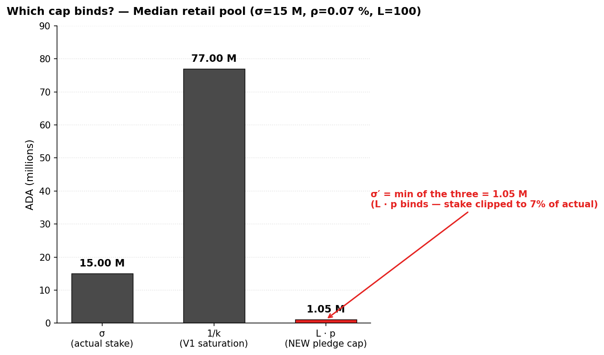
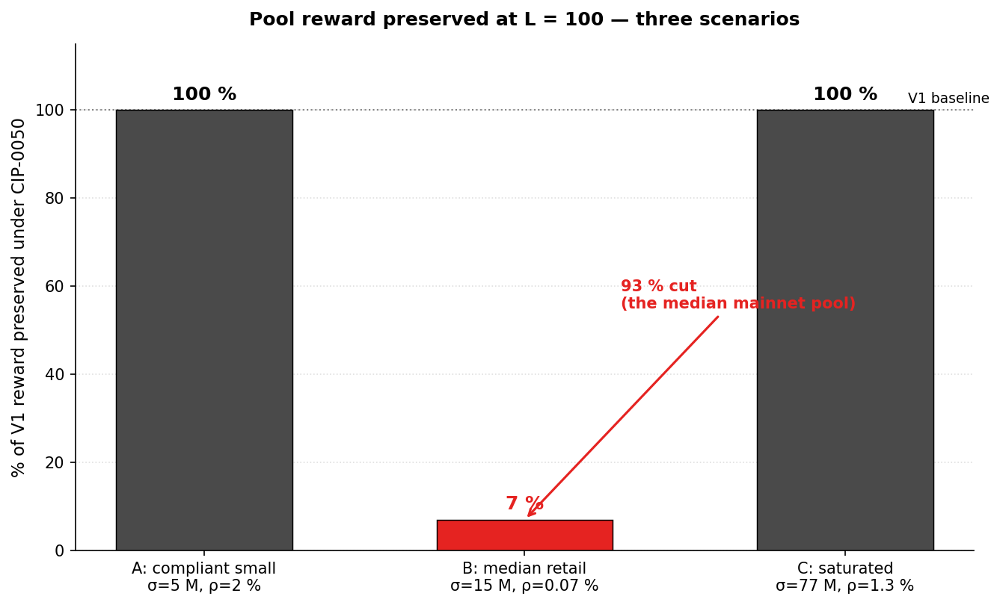
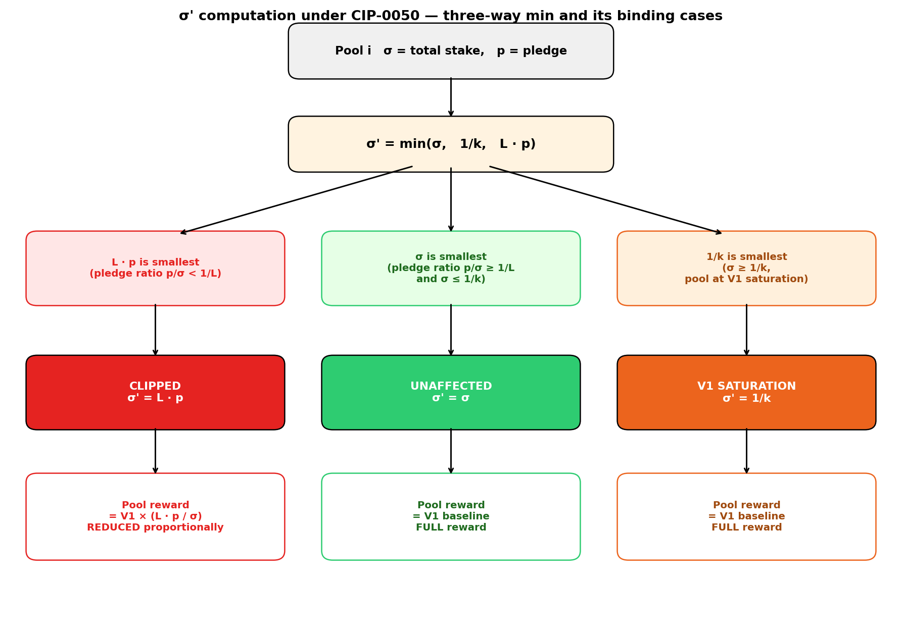
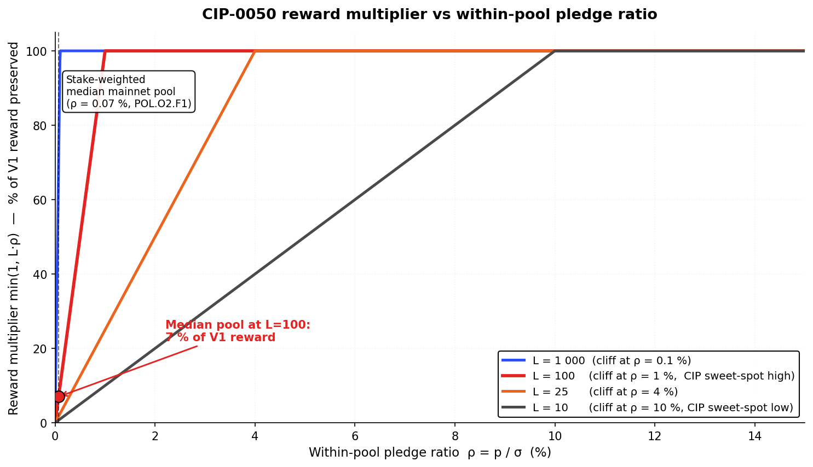
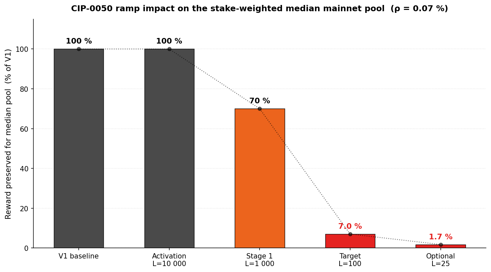
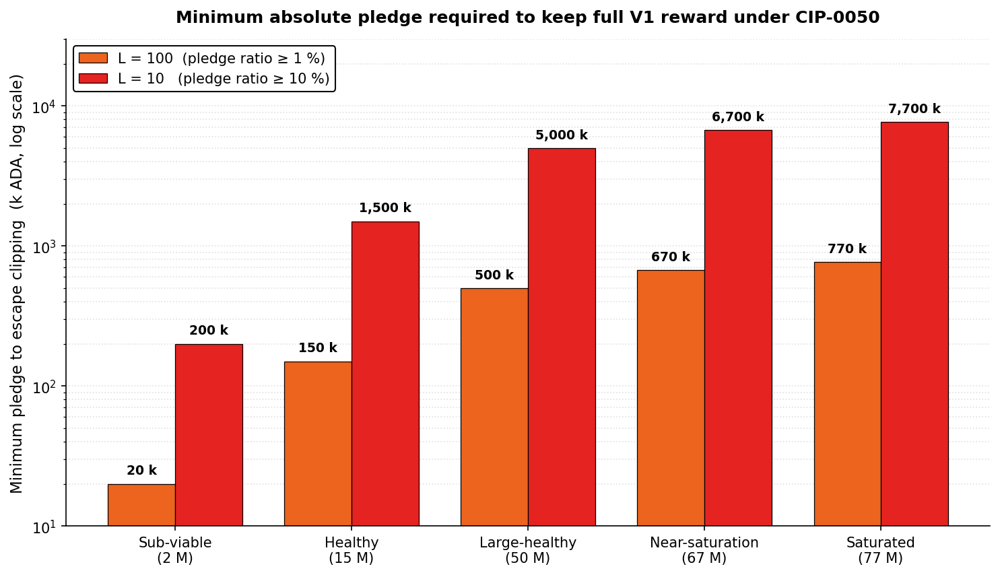
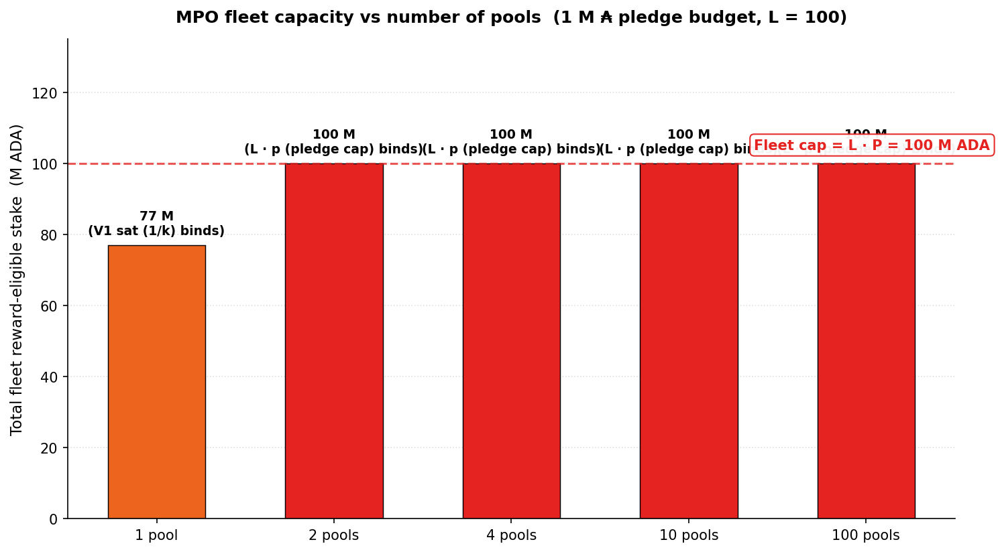
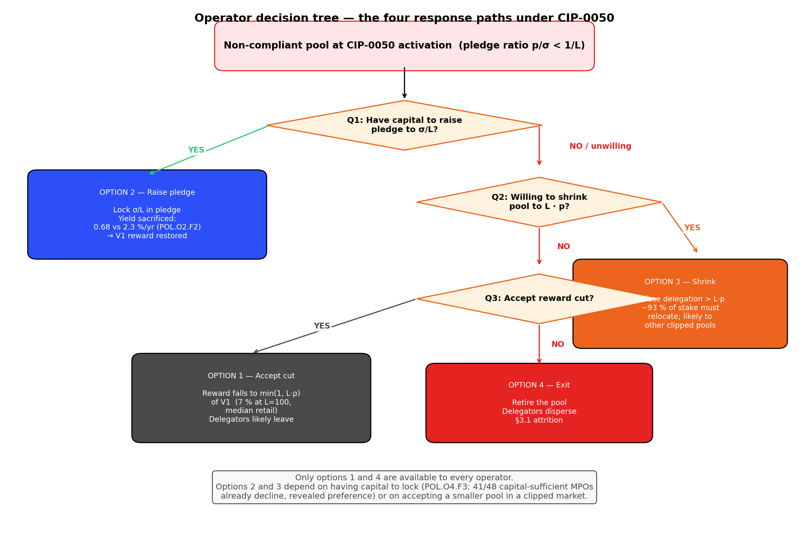
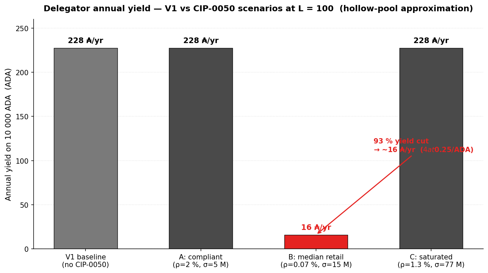
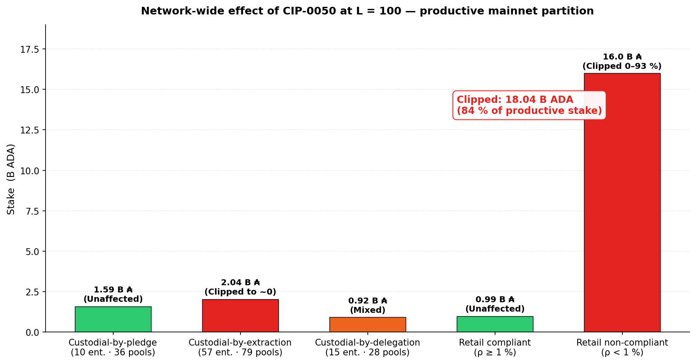

CIP-0050 introduces a single new parameter — the pledge leverage L — that makes pledge a binding cap on each pool's reward-eligible stake. The new rule is σ' = min(σ, 1/k, L · p): a pool can earn rewards on at most L times its operator's pledge, in addition to the existing V1 saturation cap. Pools with zero pledge collapse to zero reward; pool-splitting becomes revenue-neutral by construction. The reform sits upstream of the operator/member split, modifying the reward envelope itself rather than how the envelope is divided.
This is the sharpest pledge-as-signal instrument in the candidate bundle. It targets V2 §3.2 (pledge as signal) and §3.4 (pool-level concentration via Sybil cost) directly — the formula's structure now forces operators to demonstrate skin in the game to capture delegation. But it does so by discriminating on the operator's capital capability, not on operator quality or network contribution: a population that cannot self-pledge (custodial-by-extraction entities, under-capitalised retail operators) is penalised regardless of how reliably they produce blocks or serve delegators.
The core question this evaluation asks: does CIP-0050 repair the pledge signal at an acceptable cost to the operator populations that cannot respond by raising pledge?
The argument proceeds in three parts:
-
Introduction (§1). CIP identity card, origin and historical context, the diagnostic findings the proposal targets, and the V2 §3 problem statement (Missing CPS) it implicitly addresses.
-
Mechanism (§2). The formula and design surface, expressed in the (ν, π) basis with worked examples; the three binding regimes; structural properties that hold regardless of operator response; the reduced compliance condition
π < 1/Lthat makes the rule mechanically simple. -
Limits as a standalone proposal (§3). Three synthesis findings — S1 (mechanical sharpness — Delivers), S2 (capital-capability bias — Regresses), S3 (entity-level §3.4 gap and small-pool viability risk — Regresses + Blind spot) — each anchored in quantitative findings against the canonical 9-tier pool-size taxonomy and the n-MPO operator-fleet brackets.
The Executive summary below packages the verdict in one place; the Findings summary table after it is the navigation index for §3.
Executive summary
- Verdict. Sharpest pledge-as-signal instrument in the bundle. A single scalar parameter $L$ makes pledge a binding cap on reward-eligible stake: $\sigma' = \min(\sigma, 1/k, L \cdot p)$. Zero-pledge pools collapse to zero reward; pool-splitting is revenue-neutral. But the instrument discriminates by capital capability, not by operator quality — a population that cannot self-pledge (custodial funds, under-capitalised retail operators) is penalised regardless of network contribution.
- Instrument. One new parameter
pledgeLeverage($L$, dimensionless). Modifies the reward-eligible stake $\sigma'$ used inside the SL-D1 formula, upstream of the operator/member split. HFC required (new ledger variable). Existing certificates preserved. - Three synthesis findings carry the verdict — detailed in §3 and re-surfaced inline:
- S1 — Mechanical sharpness: zero-pledge hard break + pool-splitting revenue-neutral make pledge binding on the reward formula at the pool level (2 [D] F's: §3.1).
- S2 — Capital-capability bias: the reward rule discriminates by the operator's ability to self-pledge, not by operator quality; the population most affected is not the target the V2 §3.2 rationale names (2 [R] + 1 [B] F's: §3.2).
- S3 — Entity-level §3.4 concentration gap and viability risk to the small-pool tail (2 [R] + 1 [B] F's: §3.3).
Findings summary
CIP evaluations use a three-level taxonomy mirroring the diagnostic's SUBFLOW.O<n>.F<m>: S
| Code | Tag | Claim | Emerges in |
|---|---|---|---|
| CIP-0050.S1 | Mechanically sharp on pledge-as-signal: zero-pledge hard break + revenue-neutral pool-splitting | §3.1 | |
| CIP-0050.S1.F1 | [D] | Zero-pledge hard break. $L \cdot 0 = 0$: any pool with $\pi = 0$ (no self-pledge) has $\sigma' = 0$ and earns zero reward regardless of delegation. Restores pledge as a binding constraint — direct delivery on V2 §3.2 pledge-as-signal | §2.2, §3.1 |
| CIP-0050.S1.F2 | [D] | Pool-splitting revenue-neutral. A pledge budget $P$ split across $N$ pools produces a total cap of $L \cdot P$ — identical to the single-pool cap. MPO fleet expansion delivers no reward advantage at the pool level — direct delivery on V2 §3.4 pool-level concentration | §2.2, §3.1 |
| CIP-0050.S2 | Capital-capability bias: the reward rule discriminates by the operator's capacity to self-pledge, not by operator quality | §3.2 | |
| CIP-0050.S2.F1 | [R] | Median retail pool is cut by ~93 %. At L=100 and the stake-weighted median retail pledge ratio of 0.07 % (POL.O2.F1), $L \cdot p = 0.07 \sigma$ and $\sigma' = 0.07\sigma$. Pool reward drops to ~7 % of its V1 baseline. 78 % of staked ADA sits in pools below the 1 % pledge-ratio threshold where the cap begins to bind | §2.3, §3.2 |
| CIP-0050.S2.F2 | [R] | Custodial segment (21 % of productive stake) cannot respond. Custodial-by-extraction entities (57 entities, 2.04 B ADA) hold custodied retail funds with structural $p = 0$; reward collapses to zero with no recourse. Custodial-by-pledge (10 entities, 1.59 B) already self-pledge at scale and are unaffected — but do not compete for retail delegation anyway | §1.3, §3.2 |
| CIP-0050.S2.F3 | [B] | The bet that operators will pledge more is contradicted by the opportunity-cost data. POL.O2.F2: pledge yield is 0.68 %/yr at best vs 2.3 %/yr on passive delegation. POL.O4.F3: 41 of 48 capital-sufficient MPOs already forfeit the bonus today. CIP-0050 shifts the rules but not the passive-delegation-vs-pledge comparison — and adds opportunity cost without flipping the dominance relation | §3.2 |
| CIP-0050.S3 | Entity-level §3.4 concentration gap and §3.1 viability risk to the retail small-pool tail | §3.3 | |
| CIP-0050.S3.F1 | [R] | Entity-level §3.4 gap. Custodial-by-pledge entities with native pledge ≫ $L \cdot p$ bind neither cap — these are today's largest concentration of stake (10 entities, 1.59 B ADA) and remain untouched. The concentration metric that matters for Sybil resistance is entity-level, not pool-level | §3.3 |
| CIP-0050.S3.F2 | [R] | §3.1 viability risk. Retail small-pool operators with attracted delegation and low pledge (POL.O5.F2: 78 % of single-pool stake non-compliant) see reward clipped — and with the fee split unchanged, both operator take and delegator ROS fall proportionally. Without a companion fee-layer viability floor, CIP-0050 accelerates small-pool attrition | §3.3 |
| CIP-0050.S3.F3 | [B] | The "new entrants will fill new slots" argument requires a delegator-response channel the diagnostic does not support. OPE.O7.F1: delegation is not sticky but does not clearly follow yield; the population willing to migrate from a clipped pool to a higher-pledge alternative on ROS signal is narrow. The decentralisation gain therefore depends on a redistribution channel that may not materialise | §3.3 |
Cross-layer link. CIP-0050 acts on the right V2 layer (reward-distribution, pre-split) for a distribution fix — the layer the fee-layer critique (../operator-delegator/README.md) identified as the principled home for viability and concentration reforms. But the target is V2 §3.2 pledge-as-signal, not §3.1 viability. Deploying CIP-0050 without an active §3.1 instrument risks accelerating the very small-pool attrition V2 §3.1 is meant to prevent (see S3.F2).
Table of Contents
1. Introduction
CIP-0050 — "Pledge Leverage-Based Staking Rewards". A 2022 proposal (updated 2025) to make the pool-operator pledge into a binding cap on the reward-eligible stake of a pool. The core idea: convert pledge from a cosmetic bonus into a leverage limit.
1.1. Identity card
| Field | Value |
|---|---|
| CIP number | CIP-0050 |
| Title | Pledge Leverage-Based Staking Rewards |
| Authors | Michael Liesenfelt, Ryan Wiley, Rich Manderino, Stef M, Wayne, Homer J, Chad |
| Created | 2022/04/04 |
| Last updated | 2025/05/20 |
| Category | Ledger |
| Status | Proposed (as of 2026/04) |
| Official page | cips.cardano.org/cip/CIP-0050 |
| Source (GitHub) | cardano-foundation/CIPs / CIP-0050 |
| Discussion PRs | #242 (original), #1042 (2025 update) |
1.2. Origin and context
Authorship and moment. Written in April 2022 by Michael Liesenfelt and co-authors, updated in May 2025. The authors' central observation: under $a_0 = 0.3$, the yield gap between zero-pledge and fully-pledged pools is ~22 % — "statistically unnoticed" by delegators and dominated by epoch-to-epoch variance. The CIP converts pledge from a nudge (a small yield advantage that delegators could notice) into a constraint (a hard cap on reward-eligible stake that makes pledge load-bearing).
Scope. CIP-0050 modifies the reward-distribution formula itself (the σ' clipping rule), not the fee-layer split. It is therefore a pools-distribution-layer instrument, not a fee-layer instrument. A pool with clipped σ' produces less reward in total; the split between operator and delegators remains whatever the fee-layer parameters (minPoolCost, poolRate) dictate.
Relation to other CIPs in the evaluation bundle.
- Fee-layer CIPs (CIP-0023, CIP-0082) act on a different layer (post-per-pool-allocation split). CIP-0050 composes cleanly with either on the mechanical axis — they act on sequential stages of the reward pipeline — but the two sets target different V2 milestones.
- CIP-0037 is the other stake-cap candidate in this evaluation. Same target (§3.2 pledge signal + §3.4 concentration) via a different primitive (smooth saturation curve vs hard cap). A coherent V2 package picks one stake-cap instrument; stacking both is not canonical.
- k lever is the transversal parameter. CIP-0050 text argues $L$ converts a k-raise from a concentration risk into a decentralisation lever (stake-cap CIPs foreclose MPO fleet expansion; new slots therefore go to new operators rather than existing fleets). Standalone k-analysis: ../operator-delegator/k-parameter.md.
1.3. Related diagnostic findings
CIP-0050 targets exactly the pledge pathology our mainnet diagnostic documents. Six findings are directly relevant.
| Finding | Why shared | Supporting observations |
|---|---|---|
| POL.O2.F1 — 78 % of staked ADA sits in pools with pledge ratio < 1 %; stake-weighted median is 0.07 % | CIP-0050 at L=100 begins to bind precisely at the 1 % pledge ratio. The median retail pool sits far below that threshold — so a majority-of-stake population is the direct subject of the reform | — |
| POL.O2.F2 — Pledge yield is 0.68 %/yr at best (full saturation + full self-pledge) vs ~2.3 %/yr on passive delegation | The CIP assumes operators will respond by increasing pledge. The opportunity-cost data shows pledge is dominated by passive delegation yield; shifting σ' rules does not flip this comparison. The why behind POL.O2.F1 is not the absence of the constraint; it is the economic dominance of the non-pledge choice | "The 'game' for operators is overwhelmingly about size (ν), not commitment (π)" — POL.O2.F2 |
| POL.O4.F1 / POL.O4.F2 — 85 MPO entities operate 901 pools holding 16.4 B ₳ (75.4 % of participating stake); 48 of them are capital-sufficient | The entity-level concentration metric that matters for Sybil resistance. CIP-0050 is revenue-neutral against pool-splitting but leaves the 10 custodial-by-pledge entities with native pledge unconstrained — and those entities hold a large share of stake today | — |
| POL.O4.F3 — 41 of 48 capital-sufficient MPOs are non-compliant on pledge | The population that could respond to CIP-0050 by increasing pledge has already shown it does not choose that option under current rules. CIP-0050 shifts the rules but the opportunity-cost calculus does not flip | — |
| POL.O5.F2 — 78 % of single-pool stake is non-compliant (pledge ratio < 2 %). Compliant + exemplary hold 5.8 % — economically negligible | Retail single-pool operators — the population V2 §3.1 targets — empirically do not pledge. CIP-0050 at L=100 clips this population's reward, accelerating attrition | — |
| OPE.O7.F1 — Delegation is not sticky but not clearly yield-following either | The CIP's "new entrants will fill the slots vacated by clipped pools" argument requires a delegator-response channel. OPE.O7.F1 shows the observed flow tracks brand / wallet / visibility rather than yield — the response channel is uncertain | — |
1.4. Missing CPSs — mapping to V2 §3
CIP-0050 ships with an explicit problem statement: pledge is priced as irrelevant, and the reward formula should make it binding. Mapped to V2 §3:
| V2 slot | What CIP-0050 proposes as the fix | Weight | Evidence base |
|---|---|---|---|
| §3.2 Restore the notion of pledge among operators | $L \cdot p$ cap on reward-eligible stake — zero-pledge hard break, pool-splitting revenue-neutral | Primary | POL.O2.F1, POL.O2.F2 |
| §3.4 Reduce the concentration effects that distort both populations | Revenue-neutral pool splitting → MPO fleet expansion no longer delivers reward advantage at the pool level | Secondary (pool-level only) | POL.O4.F1, POL.O4.F2 |
| §3.1 Guarantee operator viability across the entire productive population | Not addressed by the instrument. The fee-layer split (minPoolCost, margin) is untouched; the σ' clip only makes low-pledge pools worse |
Out of scope — and potentially regressive without a companion §3.1 instrument | OPE.O6.F4, POL.O5.F2 |
| §3.3 Maintain and diversify a competitive delegator yield | Not addressed. Delegator ROS reshuffles via σ' clipping but the distribution narrows to pledge-compliant pools | Out of reach | — |
Foundational point. V2 §3.2 (pledge signal) and §3.4 (concentration) are downstream problems that V2 places on top of §3.1 (operator viability). CIP-0050 correctly targets §3.2 but does not address §3.1 — and per §3.2 of this file (S2 in the findings), it may actively worsen the §3.1 population. The instrument is coherent on its own terms but requires a companion §3.1 reform.
2. Mechanism
2.1. Formula
CIP-0050 modifies the reward-eligible stake $\sigma'$ entering the SL-D1 reward function (full treatment in pools-distribution §2.3):
$$\sigma'^{(50)}_{i} = \min\!\left(\sigma_{i},\ \frac{1}{k},\ L \cdot p_{i}\right)$$
Symbols — inherited from the SL-D1 formula as simplified in the sub-flow. The RSS protocol normalises stake and pledge as fractions of circulating supply, not absolute ADA. Under that convention:
- $\sigma_i$ — pool $i$'s total stake (pledge + delegated), as a fraction of circulating supply.
- $p_i$ — pool $i$'s pledge, as a fraction of circulating supply.
- $k$ — target-pool count protocol parameter.
- $z_0 = 1/k$ — the saturation threshold as a fraction of circulating supply. At $k = 500$ and today's mainnet Supply, $z_0 \cdot \text{Supply} \approx 77$ M ADA in absolute terms.
- $L$ — new leverage cap, dimensionless ($L \geq 1$).
The reward curve is expressed in two normalised coordinates (from pools-distribution §2.3):
- $\nu = \sigma / z_0$ — stake saturation level: what fraction of one fully-saturated V1 pool the total stake represents. $\nu = 1$ means the pool is at V1 saturation; $\nu > 1$ means oversaturated.
- $\pi = s / \sigma$ — within-pool pledge ratio: the fraction of the pool's stake the operator commits as their own. $\pi = 0$ means hollow pool; $\pi = 1$ means full self-pledge.
These are independent coordinates over $[0, 1] \times [0, 1]$. The pool reward is $\hat f'(\nu, \pi, \bar p) = \bar p \cdot P_{\max} \cdot E(\nu, \pi)$ where $P_{\max} = R/k$ (reward ceiling) and $E(\nu, \pi)$ is the envelope function (see pools-distribution §2.3).
CIP-0050 in normalised coordinates. Substituting $\sigma = \nu z_0$ and $p = s = \pi \nu z_0$ into the CIP formula and dividing by $z_0$:
$$\nu'^{(50)}_{i} \;=\; \min\!\left(\nu_{i},\ 1,\ L \cdot \pi_{i} \cdot \nu_{i}\right) \;=\; \nu_{i} \cdot \min\!\left(1,\ \tfrac{1}{\nu_{i}},\ L \cdot \pi_{i}\right)$$
For pools below or at V1 saturation ($\nu \leq 1$) the second term $1/\nu \geq 1$ is dominated, so the formula simplifies to $\nu' = \nu \cdot \min(1, L \cdot \pi)$. The reward becomes $\hat f' = \bar p \cdot P_{\max} \cdot E(\nu', \pi)$.
Reading the formula — the three binding cases:
| Constraint | What it does | When it binds |
|---|---|---|
| $\nu$ (or $\sigma$) | The pool's actual total-stake saturation | Not binding by itself — it is the target $\nu'$ starts from |
| $1$ (or $1/k$) | The V1 saturation cap — same as today | When the pool is at or above saturation ($\nu \geq 1$, i.e. $\sigma \geq z_0$ ≈ 77 M ADA) |
| $L \cdot \pi \cdot \nu$ (or $L \cdot s$) | New — cap proportional to absolute pledge | When the within-pool pledge ratio is too low: $L \cdot \pi < 1$, i.e. $\pi < 1/L$ |
For $L = 100$: the new cap binds whenever the pool's within-pool pledge ratio $\pi$ falls below 1 %. Above 1 %, CIP-0050 is invisible; at or below 1 %, the effective saturation level $\nu'$ is clipped to $L \cdot \pi \cdot \nu$ and the reward shrinks accordingly. The compliance condition reduces to a direct threshold on the pledge ratio.
Visualising the three caps — which one wins, for the median retail pool.

Reading. σ' = min of the three bars = 1.05 M ₳ (the third cap, $L \cdot p$). The new pledge cap slices the pool's reward-eligible stake down to 7 % of its actual size. This is the mechanical signature of CIP-0050: when the median mainnet pool is evaluated against the three caps, the new pledge cap is dramatically smaller than the other two, and it wins the min.
Design surface.
| Property | Value |
|---|---|
| New parameter | $L$ (pledgeLeverage), dimensionless |
| Range | $1 \leq L \leq 10\,000$ |
| CIP-recommended sweet spot | $L \in [10, 100]$ |
| Layer | Stake-cap (applied before reward curve) |
| Fee-layer split | Unchanged |
| Hard fork | Required (new ledger variable) |
| Re-registration | Not required |
| Governance surface | 1 scalar |
2.2. Walking through the formula — three scenarios
The three min-arguments ($\nu$, 1, $L\cdot\pi\cdot\nu$) — equivalently $(\sigma, 1/k, L\cdot s)$ in absolute units — carve the state space into three regimes. Each scenario below shows the four quantities $(\sigma, s, \nu, \pi)$ alongside the binding cap. $z_0 \approx 77$ M ADA at today's mainnet, L = 100.
Scenario A — Compliant small pool (within-pool pledge ratio $\pi \geq 1/L = 1\,\%$).
| Quantity | Value |
|---|---|
| Total stake $\sigma_{\text{abs}}$ | 5 M ₳ |
| Pledge $s_{\text{abs}}$ | 100 k ₳ |
| Stake saturation level $\nu = \sigma/z_0$ | 0.065 (6.5 % of V1 saturation) |
| Pledge ratio $\pi = s/\sigma$ | 0.020 (2 %) — at or above $1/L = 1\,\%$ |
| $L \cdot \pi$ | 2.0 — greater than 1, so $L\cdot\pi\cdot\nu = 2\nu > \nu$, does not bind |
| $\nu' = \min(\nu, 1, L\cdot\pi\cdot\nu)$ | $\nu$ — cap inactive |
| Pool reward | V1 baseline, unchanged |
Scenario B — Non-compliant mainnet-median pool (within-pool pledge ratio 0.07 %).
| Quantity | Value |
|---|---|
| Total stake $\sigma_{\text{abs}}$ | 15 M ₳ (Healthy tier) |
| Pledge $s_{\text{abs}}$ | 10.5 k ₳ (stake-weighted median per POL.O2.F1) |
| $\nu = \sigma / z_0$ | 0.195 (19.5 % of V1 saturation) |
| $\pi = s/\sigma$ | 0.0007 (0.07 %) — far below $1/L = 1\,\%$ |
| $L \cdot \pi$ | 0.07 — less than 1, so $L\cdot\pi\cdot\nu = 0.07\,\nu < \nu$, cap binds |
| $\nu' = \min(\nu, 1, L\cdot\pi\cdot\nu)$ | $\nu' = L\cdot\pi\cdot\nu = $ 0.0136 (saturation level clipped to 1.4 % of V1) |
| Pool reward | $\nu'/\nu = L\cdot\pi = 0.07 \approx$ 7 % of V1 baseline — 93 % cut |
Scenario C — Saturated pool with thin pledge.
| Quantity | Value |
|---|---|
| Total stake $\sigma_{\text{abs}}$ | 77 M ₳ (at saturation) |
| Pledge $s_{\text{abs}}$ | 1 M ₳ |
| $\nu = \sigma / z_0$ | 1.0 (at V1 saturation) |
| $\pi = s/\sigma$ | 0.013 (1.3 %) — above $1/L = 1\,\%$ |
| $L \cdot \pi$ | 1.3 — greater than 1, so $L\cdot\pi\cdot\nu = 1.3 > 1$, the V1 cap (1) wins |
| $\nu' = \min(\nu, 1, L\cdot\pi\cdot\nu)$ | $\nu' = $ 1.0 (V1 saturation cap binds) |
| Pool reward | V1 baseline, unchanged |
The core consequence. For a given $L$, the reform partitions the pool population by a single threshold on the within-pool pledge ratio $\pi$: at or above $1/L$, CIP-0050 is inactive; below it, the effective saturation level $\nu'$ is clipped to $L \cdot \pi \cdot \nu$ and the pool reward scales with the clip ratio $\nu'/\nu = L \cdot \pi$. Scenarios A and C both illustrate "cap does not bind" but for different reasons — A is compliant on pledge ratio; C is bounded by V1 saturation before the pledge cap can bite.
The three scenarios side by side.

Reading. The two compliant pools (A and C) see zero change. The median retail pool (B) — which is where 78 % of staked ADA sits per POL.O2.F1 — is cut to 7 %. The reform draws a binary line on the pledge-ratio axis at $1/L$: above it, invisible; below it, severe.
2.3. How much pledge does an operator need?
For any pool with stake $\sigma$, the minimum pledge to escape clipping at $L = 100$ is:
$$p_{\min} = \frac{\sigma}{L} = \frac{\sigma}{100}$$
Worked across the canonical nine-tier taxonomy (from pools-distribution §4.1.3):
| Tier | Representative σ | Minimum pledge to escape clipping at $L = 100$ | Minimum pledge at $L = 10$ |
|---|---|---|---|
| Dormant | 50 K | 500 ₳ | 5 000 ₳ |
| Sub-production | 500 K | 5 000 ₳ | 50 000 ₳ |
| Sub-viable | 2 M | 20 000 ₳ | 200 000 ₳ |
| Healthy | 15 M | 150 000 ₳ | 1 500 000 ₳ |
| Large healthy | 50 M | 500 000 ₳ | 5 000 000 ₳ |
| Near-saturation | 67 M | 670 000 ₳ | 6 700 000 ₳ |
| Saturated | 77 M | 770 000 ₳ | 7 700 000 ₳ |
Reading the table. At $L = 100$, a Healthy-tier pool needs 150 k ADA (≈ $37 k USD at \$0.25/ADA) to escape clipping. A Saturated-tier pool needs 770 k ADA (≈ \$192 k USD). At the tighter $L = 10$ the CIP considers, the pledge requirement is 10× higher — a Healthy pool would need 1.5 M ADA (≈ \$375 k USD).
2.4. Visualising the σ' cap — the "pledge cliff" at the 1/L threshold
How the σ' is computed — the three-way min.

Reading the flow. Each pool's effective stake σ' is the smallest of three caps. Which cap binds partitions the pool population into three regimes: Clipped (new pledge-leverage cap binds — pool reward reduced to V1 × L·p/σ), Unaffected (actual stake binds — full V1 reward), V1 saturation (the legacy 1/k cap still binds, CIP-0050 is a no-op for these pools).
Reward preserved vs pledge ratio — the cliff shape at different L values.

Four curves shown: L = 1 000 (near-inactive — cliff at 0.1 %), L = 100 (CIP sweet-spot high end — cliff at 1 %), L = 25, L = 10 (CIP sweet-spot low end — cliff at 10 %). Higher L = earlier cliff = less aggressive clipping. All curves are linear up to the cliff, then flat at 100 %. The median mainnet pool at ρ = 0.07 % (POL.O2.F1) is explicitly marked on the L=100 curve — 7 % of V1 reward preserved.
Where the mainnet stake sits today relative to the cliff. The stake-weighted-median retail pledge ratio is 0.07 % (POL.O2.F1). That is marked on the X axis above and falls in the clipped regime at every L ≥ 10. At the CIP's recommended $L = 100$, the median pool preserves only 7 % of its V1 reward.
The ramp, seen from the median mainnet pool.

Reading. Each step of the CIP's staged ramp compresses the median pool's reward by roughly an order of magnitude. The "activation" step ($L = 10\,000$) is designed to be a no-op — only pools with pledge ratio below 0.01 % are affected. At $L = 1\,000$ the median pool starts to feel the clip (~70 % preserved). At $L = 100$ (the CIP's long-run target) the median pool is reduced to 7 %. At the optional $L = 25$ step it falls to ~1.75 %.
Summary table for precision:
| Leverage $L$ | Cliff threshold (minimum compliant pledge ratio) | Median-pool reward fraction (π = 0.07 %) |
|---|---|---|
| $L = 10\,000$ (near-inactive) | 0.01 % | ~100 % (essentially no effect) |
| $L = 1\,000$ | 0.1 % | ~70 % |
| $L = 100$ (CIP sweet-spot high end) | 1 % | ~7 % |
| $L = 25$ | 4 % | ~1.75 % |
| $L = 10$ (CIP sweet-spot low end) | 10 % | ~0.7 % |
2.5. Structural properties (theorems, not predictions)
Four properties follow directly from the formula — independent of any behavioural assumption:
| Property | Statement | Type |
|---|---|---|
| Zero-pledge hard break | $\pi = 0 \Rightarrow L \cdot p = 0 \Rightarrow \sigma' = 0 \Rightarrow \hat f' = 0$ | Algebraic |
| Pool-splitting revenue-neutral | A pledge budget $P$ split across $N$ pools of equal pledge $p = P/N$ gives a total cap $N \cdot (L \cdot P/N) = L \cdot P$ = single-pool cap | Algebraic |
| Monotonicity in pledge | $\partial \sigma'/\partial p \geq 0$ on the binding branch ($\sigma' = L\cdot p$); rewarding higher pledge is strictly (weakly) weighted | Algebraic |
| Price invariance | $L$ is dimensionless; the cap is a ratio | Structural |
These are the design strengths of CIP-0050. They hold regardless of whether operators respond behaviourally.
2.6. What this means for different operator types — a worked map
A concrete example. Consider three mainnet operator archetypes (profiles inferred from operator-delegator §4.3.3):
| Operator type | Pool stake σ | Self-pledge p | Pledge ratio | σ' at L=100 | V1 reward preserved | What they must do to stay whole |
|---|---|---|---|---|---|---|
| Everstake-style 11+ MPO (per pool) | 33.4 M ₳ | ~30 k ₳ (0.09 %) | 0.09 % | 3.0 M ₳ | 9 % | Add ~304 k ADA pledge per pool — for an 11-pool fleet, ~3.3 M ADA total |
| Community single-pool (typical retail) | 11.4 M ₳ | ~8 k ₳ (0.07 %) | 0.07 % | 0.8 M ₳ | 7 % | Add ~106 k ADA pledge — ≈ $27 k USD at \$0.25/ADA |
| Cardano Foundation / private treasury | 77 M ₳ | large (e.g. 60 M ₳ at 78 % ratio) | ≥ 1 % | 77 M ₳ | 100 % | Nothing — already compliant |
The operator-level implication. Compliance under CIP-0050 at $L = 100$ requires the operator to lock 1 % of the pool's total stake as pledge. Three populations face very different economics:
- Custodial-by-extraction (CEX / IVaaS) — cannot self-pledge (funds are custodied retail balances, legally separate from operator capital). σ collapses to σ' = 0. Their only recourse is to attract pledge-holding partners or exit.
- Retail small-pool operators — the median pool needs hundreds of thousand of ADA in additional self-pledge. Most operators in this segment do not have this capital liquid. Their realistic options are: (a) shrink the pool by refusing delegation beyond $L \cdot p$, (b) accept the reward cut, (c) exit.
- Treasury / foundation pools — already compliant by construction. The reform is a no-op for this segment.
The reform's signal to the network is: "to operate a pool that captures delegation, you must prove 1 % of the pool's stake in personal capital". That signal is clean in principle — it is exactly the pledge-as-binding-commitment V2 §3.2 asks for — but it selects for the operator's capital capability, which does not correlate with operator quality or network contribution (see §3.2).
Minimum pledge to escape clipping, by tier — a visual ladder.

Two bars per tier (orange = L=100, red = L=10). At L = 100, a Healthy-tier pool operator needs 150 k ₳ (~$37 k USD at \$0.25/ADA) of self-pledge. At L = 10, the same operator needs 1.5 M ₳ (~\$375 k USD). The capital threshold scales linearly with pool stake (at fixed L) and linearly with 1/L (at fixed stake) — a quadratic compounding across the two axes as the ramp tightens.
The pool-size sweep at median pledge. At the stake-weighted-median pledge ratio of 0.07 %, the fraction of reward preserved is the same for every pool size (7 %) — but the absolute stake clipped scales with σ:
| Tier | σ | Pledge at 0.07 % ratio | L · p (at L = 100) | σ' | V1 stake clipped away |
|---|---|---|---|---|---|
| Sub-viable | 2 M | 1.4 k ₳ | 140 k | 140 k | 1.86 M ₳ (93 %) |
| Healthy | 15 M | 10.5 k ₳ | 1.05 M | 1.05 M | 13.95 M ₳ (93 %) |
| Large healthy | 50 M | 35 k ₳ | 3.5 M | 3.5 M | 46.5 M ₳ (93 %) |
| Near-saturation | 67 M | 47 k ₳ | 4.7 M | 4.7 M | 62.3 M ₳ (93 %) |
| Saturated | 77 M | 53.9 k ₳ | 5.39 M | 5.39 M | 71.6 M ₳ (93 %) |
Reading the table. The relative impact is uniform (7 % preserved everywhere at the same pledge ratio), but the absolute "stake in exile" grows linearly with the pool. A Saturated-tier pool with the median pledge ratio loses 71.6 M ₳ of reward-earning stake — the bulk of its delegation effectively becomes unrewarded overnight unless the operator raises pledge.
What can an operator do? A non-compliant operator facing the cap has four response paths. Using the Healthy-tier 15 M ₳ pool as the reference (10.5 k ₳ pledge = 0.07 % ratio):
| Option | Action | Outcome | Feasibility |
|---|---|---|---|
| 1 — Accept the cut | Do nothing | Pool reward falls to 7 % of V1; operator take and delegator ROS both cut proportionally (fee split is unchanged) | Always available; signals to delegators "this pool no longer competes" |
| 2 — Raise pledge to compliance | Add ~140 k ₳ pledge to reach 1 % ratio (~\$35 k USD at \$0.25/ADA) | Cap no longer binds; pool reward restored to V1 | Feasible only for operators with this much liquid capital; opportunity cost = pledge yield (0.68 %/yr) vs passive delegation (2.3 %/yr) — negative on that axis alone (POL.O2.F2) |
| 3 — Shrink the pool | Refuse delegation beyond $L \cdot p = 1.05$ M | Pool stays compliant but at a fraction of its current size; ~14 M ₳ of former delegation must relocate | Feasible but destructive: delegators seek new pools that are themselves likely clipped |
| 4 — Exit | Retire the pool | Stake and delegators both dispersed | Feasible; contributes to the small-pool attrition V2 §3.1 is meant to prevent |
Only options 1 and 4 are accessible to every operator. Options 2 and 3 depend respectively on having capital to lock and on being willing to shrink.
MPO fleet example — the revenue-neutrality of pool-splitting (S1.F2 in action). Consider an operator with 1 M ₳ of pledge capital and a fleet of delegation-attracting pools. Under V1 vs CIP-0050 at $L = 100$:

Reading. At $L = 100$ with 1 M ADA pledge, the fleet-wide reward-eligible cap is $L \cdot P = 100$ M ADA. Below 4 pools, the pools hit the V1 saturation cap ($1/k \approx 77$ M) before the pledge-leverage cap binds — so the fleet capacity is bounded by V1 saturation at ~77 M ADA. From 4 pools onward, $L \cdot p < 1/k$ per pool so the pledge-leverage cap binds and fleet capacity plateaus at exactly $L \cdot P$. The MPO fleet-expansion reward advantage disappears: splitting 1 M of pledge across 100 pools gives the same aggregate reward envelope as across 4 pools.
| Configuration | Pledge per pool | σ' per pool | Binding cap | Total fleet σ' |
|---|---|---|---|---|
| 1 pool | 1 000 000 ₳ | up to 77 M | V1 saturation (1/k) | 77 M |
| 2 pools | 500 000 ₳ | up to 77 M (pledge × 100 = 50 M — wait, clipped at 50 M, but σ can be up to 77 M, so binding is L·p = 50 M per pool) | $L \cdot p$ at 50 M each | 100 M (2 × 50) |
| 4 pools | 250 000 ₳ | 25 M | $L \cdot p$ | 100 M |
| 10 pools | 100 000 ₳ | 10 M | $L \cdot p$ | 100 M |
| 100 pools | 10 000 ₳ | 1 M | $L \cdot p$ | 100 M |
The corrected 2-pool row: with 500 k pledge per pool, $L \cdot p = 50$ M, which is below $1/k \approx 77$ M, so $L \cdot p$ binds at 50 M per pool and the fleet cap is 100 M (not 77 M). The chart above reflects the binding-cap logic: the two-pool case sits at 77 M only if pool σ ≤ 50 M each (reaching the V1 cap before the pledge cap). This nuance tightens the theorem but doesn't change the direction: above the threshold where $L \cdot p < 1/k$, fleet capacity = $L \cdot P$ constant.
2.7. Operator decision tree — the four response paths

Reading the tree. Options 1 and 4 are available to every operator; options 2 and 3 require specific conditions the majority of the mainnet retail population does not satisfy. The central question CIP-0050 poses to each operator is at the first decision node: "do you have 1/L of your pool's stake in liquid capital willing to lock it?". The diagnostic answers — for 78 % of stake, and for 41 of 48 capital-sufficient MPOs — no, by revealed preference.
2.8. The delegator perspective — what a 10 k delegator sees
A delegator holding 10 000 ₳ in a pool that gets clipped experiences the cut as a per-ADA ROS reduction. The net ROS formula under unchanged fee-layer parameters is approximately:
$$\text{Net ROS} \approx \text{Gross yield}_{V1} \cdot \frac{\sigma'}{\sigma} \cdot (1 - \text{effective fee rate})$$
The first factor is constant at ~2.275 %/yr for hollow pools (per pools-distribution §4.1.2.1). The second factor is the CIP-0050 clip ratio. Using our three scenarios from §2.2:
| Scenario | Pool σ | Pledge ratio | σ' / σ | Gross yield (ADA/yr per 10k) | Net ROS after fee | Delegator yield change |
|---|---|---|---|---|---|---|
| A — Compliant | 5 M | 2 % | 1.00 | 227 ₳ | ~2.25 % (fee minor) | Unchanged |
| B — Non-compliant median | 15 M | 0.07 % | 0.07 | 16 ₳ | ~0.14 % | Drops by ~93 % |
| C — Saturated high-pledge | 77 M | 1.3 % | 1.00 | 227 ₳ | ~2.26 % | Unchanged |
A delegator in Scenario B — a typical retail pool on mainnet today — would see their yield drop from ~227 ₳/yr to ~16 ₳/yr per 10 k ADA staked. On 10 k ADA over a year, that is the difference between \$56 vs \$4 at \$0.25/ADA. At this level of compression, delegators have strong incentive to re-delegate — but per OPE.O7.F1, the observed delegator response to yield signals is not reliable, so whether the re-delegation actually occurs is the empirical open question (see §3.3).
Delegator yield on 10 000 ADA — the three scenarios.

Reading. Compliant pools (A, C) preserve the V1 yield. The median retail pool (B) — where 78 % of stake sits — collapses the delegator's yield by ~93 %. A 10 k delegator earning ~\$56/yr (V1) earns ~\$4/yr (B) at \$0.25/ADA. The compression is severe enough that a yield-responsive delegator would move; the empirical question (OPE.O7.F1) is whether delegators are yield-responsive in the data.
Delegator-side optionality summary.
- If enough delegators move out of clipped pools quickly, the reform delivers the intended redistribution.
- If they don't (the diagnostic's prior on delegator behaviour), the clipped pools stay clipped — operator revenue AND delegator ROS both fall. Everyone in Scenario B is worse off than before, with no compensating gain elsewhere.
2.9. The CIP's recommended deployment ramp
The CIP acknowledges that moving from today's regime (where pledge is cosmetic) to $L = 100$ is a shock and proposes a staged activation:
| Stage | $L$ | Cliff threshold | Rationale |
|---|---|---|---|
| Activation | 10 000 | 0.01 % | Near-inactive — installs the parameter in the ledger; most pools already compliant |
| Stage 1 | 1 000 | 0.1 % | Mild clipping; operators can observe and adjust |
| Stage 2 | 100 | 1 % | CIP-recommended long-run target |
| Stage 3 (optional) | 25 | 4 % | Tighter Sybil floor |
The ramp's implicit assumption. Each step between stages gives operators time to adjust their pledge upward. The reform rests on the assumption that this adjustment occurs before the next step — otherwise the system moves through successive regressive states. Whether the adjustment actually happens is the empirical question analysed in §3.2 of this file.
2.10. Network-wide effect at L = 100 — who is clipped, who is not
Stake-weighted partition of the 21.57 B ₳ productive mainnet (operator-delegator §4.3.3 + POL.O2.F1):

Colour encoding: red = clipped, green = unaffected, orange = mixed. The three leftmost segments are custodial (4.55 B ₳ total, 21.1 % of productive); the two rightmost are retail (17.02 B ₳, 78.9 %). The annotation surfaces the headline: ~18 B ADA — 84 % of productive stake — sits in pools where CIP-0050 at L=100 would clip or collapse.
| Segment | Stake | Typical pledge ratio | Reward effect at L=100 |
|---|---|---|---|
| Custodial-by-pledge | 1.59 B ₳ | Very high (treasury self-pledge) | Unchanged — cap does not bind |
| Custodial-by-extraction | 2.04 B ₳ | ~0 (custodied retail funds) | Collapses to ~0 |
| Custodial-by-delegation | 0.92 B ₳ | Whale-dependent | Mixed |
| Retail, pledge ≥ 1 % (compliant) | ~5.8 % × 17 B ≈ 0.99 B ₳ | ≥ 1 % | Unchanged |
| Retail, pledge < 1 % (non-compliant) | ~94 % × 17 B ≈ 16.0 B ₳ | Typically 0.07–1 % | Clipped 0 – 93 % |
Approximately 18 B ₳ of productive stake (~83 %) — Custodial-by-extraction (2.04 B clipped to ~0) plus Retail non-compliant (16 B clipped 0–93 %) — sits in pools where CIP-0050 at L=100 would bind and clip. A network-wide shock under any non-gradual ramp.
3. Limits of CIP-0050 as a standalone proposal
3.1. S1 — Mechanical sharpness on pledge-as-signal
The two [D] findings are the structural successes of the instrument and flow directly from the formula.
Finding CIP-0050.S1.F1 [D] — Zero-pledge hard break. For any pool with $\pi = 0$, the cap $L \cdot p$ evaluates to zero and clips the entire stake. A zero-pledge pool earns zero reward under CIP-0050. This is the sharpest possible expression of "pledge is a binding signal" — it converts a cosmetic yield nudge (~22 % gap at $a_0 = 0.3$) into a total reward cut-off. Direct delivery on V2 §3.2.
Finding CIP-0050.S1.F2 [D] — Pool-splitting is revenue-neutral. For an entity with pledge budget $P$ split across $N$ pools of equal pledge $p = P/N$, the total reward cap across the fleet is $N \cdot (L \cdot P/N) = L \cdot P$ — identical to what a single pool with the entire pledge would capture. The MPO fleet-expansion incentive disappears at the pool level under CIP-0050. Direct delivery on V2 §3.4 pool-level concentration.
These two properties are why CIP-0050 is the sharpest pledge-as-signal instrument in the bundle. They do not depend on behaviour; they hold as algebraic identities.
3.2. S2 — Capital-capability bias
The design is sharp on §3.2 but penalises populations by their capital capability, not by their network contribution. Three findings.
Finding CIP-0050.S2.F1 [R] — The median retail pool is cut by ~93 %. At $L = 100$ and the stake-weighted median retail pledge ratio of 0.07 % (POL.O2.F1), the cap binds at $0.07\sigma$ and pool reward drops to ~7 % of its V1 baseline (§2.3 table). POL.O2.F1 also reports that 78 % of staked ADA sits in pools with pledge ratio below 1 % — the threshold at which the cap begins not to bind. A majority of productive stake sees a material reward cut at the CIP's recommended endpoint.
Finding CIP-0050.S2.F2 [R] — The custodial segment (21 % of productive stake) cannot respond. Custodial-by-extraction entities (57 entities, 2.04 B ADA — see operator-delegator §4.3.3) hold custodied retail funds they legally cannot self-pledge. CIP-0050 clips their stake to zero; their reward collapses with no available adjustment. The affected population is exactly the one that cannot change its behaviour in response to the reform — the response channel the CIP relies on is closed for this segment by definition.
Finding CIP-0050.S2.F3 [B] — The "operators will pledge more" bet is contradicted by the opportunity-cost data. POL.O2.F2: pledge yield is 0.68 %/yr at best vs ~2.3 %/yr on passive delegation — pledge is structurally dominated by its alternative. POL.O4.F3: 41 of 48 capital-sufficient MPOs already forfeit the pledge bonus today (~40.2 M ₳/yr aggregate) rather than lock capital into a dominated position. CIP-0050 changes the rules but not the dominance relation — the population that has chosen not to pledge continues to face the same opportunity-cost argument against pledging. The bet the reform rests on is not empirically supported.
Composite reading of S2. CIP-0050 penalises two populations that cannot respond (custodial + capital-insufficient retail) and one that has chosen not to respond (capital-sufficient MPOs). The discrimination is by capital capability, not by operator quality or network contribution. A pool can produce blocks reliably, serve delegators well, and operate with integrity — and still be clipped to a fraction of its reward if its operator does not have the capital to self-pledge above 1 %.
3.3. S3 — Entity-level §3.4 gap and §3.1 viability risk
Two structural gaps in the reform's coverage, plus one blind spot on the delegator-response channel.
Finding CIP-0050.S3.F1 [R] — Entity-level §3.4 concentration is not addressed. The pool-level §3.4 claim (S1.F2) holds, but the concentration metric that matters for network Sybil resistance is at the entity level. Custodial-by-pledge entities (10 entities, 1.59 B ADA — the largest concentration of stake on mainnet today) have native pledge that easily exceeds any reasonable $L \cdot p$ threshold. CIP-0050 leaves them entirely unconstrained. The reform reshapes the MPO retail fleet but does not touch the population that dominates entity-level concentration.
Finding CIP-0050.S3.F2 [R] — §3.1 small-pool viability is at risk. Retail small-pool operators with low pledge and attracted delegation (POL.O5.F2: 78 % of single-pool stake non-compliant at pledge ratio < 2 %) see their pool reward clipped under CIP-0050. Because the fee-layer split is unchanged, both operator take and delegator ROS fall proportionally — the pool becomes less attractive to delegators, who may exit, and less economically viable for the operator. Without a companion §3.1 fee-layer viability instrument, CIP-0050 accelerates small-pool attrition. The population V2 §3.1 names as the priority is the population most exposed to CIP-0050's downside.
Finding CIP-0050.S3.F3 [B] — "New entrants fill the vacated slots" requires an empirically weak delegator-response channel. The CIP's decentralisation story is that delegation migrates from clipped (low-pledge) pools toward compliant (higher-pledge) alternatives, and that new operators emerge to supply those compliant alternatives. OPE.O7.F1: delegation flow is not sticky but does not clearly track yield either — the observed signal is brand / wallet / visibility, not ROS. The migration the reform needs to deliver its decentralisation gain is not guaranteed.
Composite reading. CIP-0050 is mechanically sharp on the target it names (pledge-as-signal, §3.2 + pool-level §3.4). It is not, on its own, a viability instrument — and under current mainnet conditions it creates viability risk for the retail small-pool population. A coherent V2 deployment would pair CIP-0050 with an active §3.1 fee-layer viability floor that protects the low-pledge small-pool tail before CIP-0050's cap begins to bind, not after.
Precondition for constructive deployment. CIP-0050 is coherent as step 2 of a three-step sequence: (i) fee-layer viability instrument secures §3.1 + §3.3; (ii) CIP-0050 activates §3.2 + pool-level §3.4; (iii) k calibration leverages the MPO-consolidation CIP-0050 induces. Deployment in any other order moves the productive landscape through a regressive intermediate state.
3.4. References
- Missing-CPS anchors: §1.4 of this file; V2 §3.2 pledge signal, §3.4 concentration, §3.1 operator viability.
- Numerical baselines: §2.3 of this file (pledge-ratio-to-clip mapping at L=100); pools-distribution §4.1.3 (nine-tier taxonomy); operator-delegator §4.3.3 (custodial / retail decomposition).
- Diagnostic findings cited in this file: POL.O2.F1, POL.O2.F2, POL.O4.F1, POL.O4.F2, POL.O4.F3, POL.O5.F2 (pools-distribution); OPE.O6.F4, OPE.O7.F1 (operator-delegator).
- Companion CIP:
cip-0037.md— alternative stake-cap primitive (smooth curve vs hard cap). Same-layer pairing is not canonical. - Fee-layer companions (§3.1 instruments):
../operator-delegator/cip-0023.md,../operator-delegator/cip-0082.md. CIP-0050's precondition for constructive deployment is a fee-layer viability instrument active first. - Transversal lever:
../operator-delegator/k-parameter.md— the standalonek-raise analysis; CIP-0050 is the stake-cap companion that converts a k-raise from a concentration risk into a decentralisation lever (CIP's own argument). - Canonical source: CIP-0050 official page at cips.cardano.org/cip/CIP-0050; source PRs #242 and #1042.
Status: Active 2026/04/23. Stake-cap-layer candidate. CIP identity and sources in §1; evaluation references in §3.4.